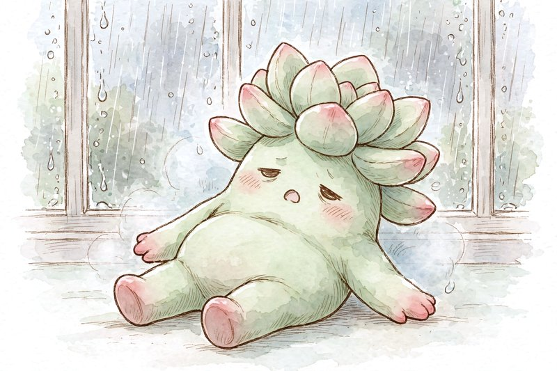
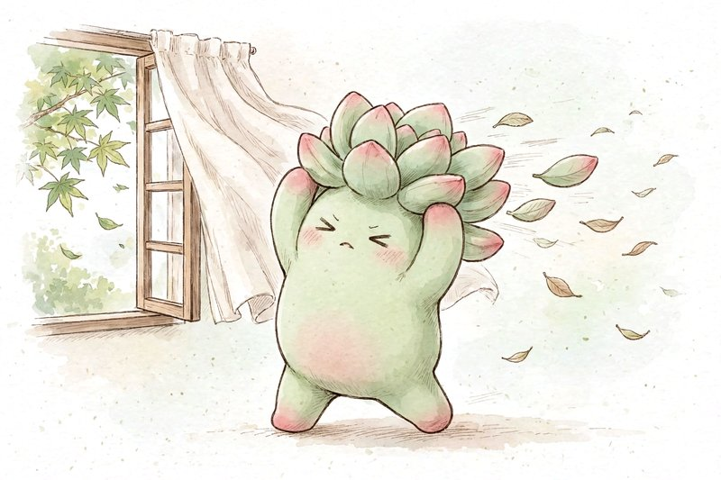

01
鉢のまわりに空間をつくる
鉢をぎっしり並べたり、壁や棚の奥に押し込んだりすると、葉のまわりに空気がとどまりやすくなります。鉢同士の間隔を少し空けて、株の周囲を空気が通れるようにしましょう。
風が通る隙間は、葉の高さにもつくりましょう。
葉のまわりに湿気や熱がこもらない環境をつくりましょう。
葉のまわりの湿った空気が入れ替わり、
水滴や土の水分が乾きやすくなる。
湿った空気がとどまりやすく、
葉や土が湿った状態が長引くことも。
鉢をぎっしり並べたり、壁や棚の奥に押し込んだりすると、葉のまわりに空気がとどまりやすくなります。鉢同士の間隔を少し空けて、株の周囲を空気が通れるようにしましょう。
風が通る隙間は、葉の高さにもつくりましょう。
水やりのあと、土の表面や鉢から水分が蒸発します。空気が流れると、その周囲の湿った空気が入れ替わり、乾きやすくなります。同じ土と鉢でも、置き場所によって乾く速さは違います。
水やりのタイミングは、実際の土の乾きで判断しましょう。

湿度が高い梅雨は、水分が蒸発しにくくなります。夏は高温が重なり、種類によっては生育も鈍ります。葉や土が長く湿ったままだと、傷みや病気につながることがあります。雨を避け、熱と湿気をため込まない場所を選びましょう。
風だけで湿度や暑さを解決できないこともあります。
窓を開けられる日は、空気の出入りをつくるとよいでしょう。窓を開けにくいときは、サーキュレーターなどで部屋の空気をゆるやかに動かします。植物に強い風を当て続ける必要はありません。
空気の循環と換気は別のもの。湿気や熱がこもるときは換気も考えましょう。

強い風が続くと、土が予想以上に早く乾いたり、鉢が倒れたりすることがあります。エアコンの冷風・温風も直接当て続けないようにしましょう。冬は冷たい風から守りながら、空気がこもらないように工夫します。
目指すのは、強い風ではなく、穏やかに空気が動く環境です。